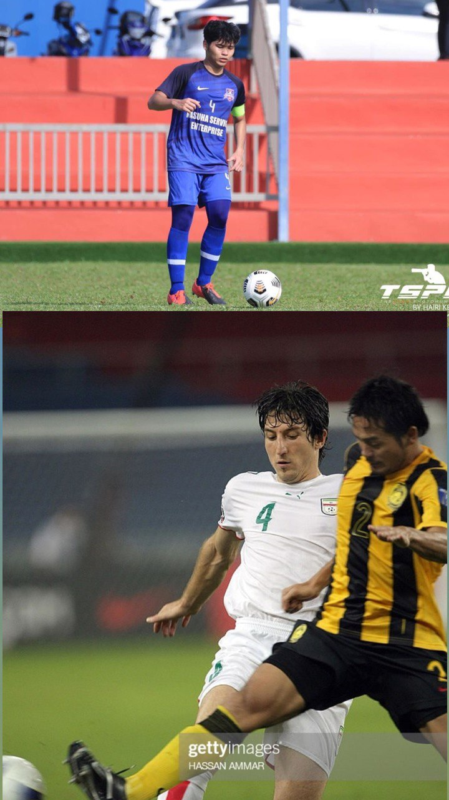

Hello Buddy
"This is my interest"
"I like to play video games like valorant because of my interest in how to always be prepared in any eventuality and how to solve problems."

"My interest in football is very high because my father is a professional football player and now my father holds the position of assistant coach of JDT. Furthermore, football is a sport that unites people regardless of race and most importantly can keep our bodies healthy."

"Cycling is a sport that increases strength in terms of physical and mental and I am a person who loves challenges. My interest in this sport of cycling since primary school because,
at that time I was given a bicycle by my parents. Azizulhasni Awang, a national cyclist is an idol me."